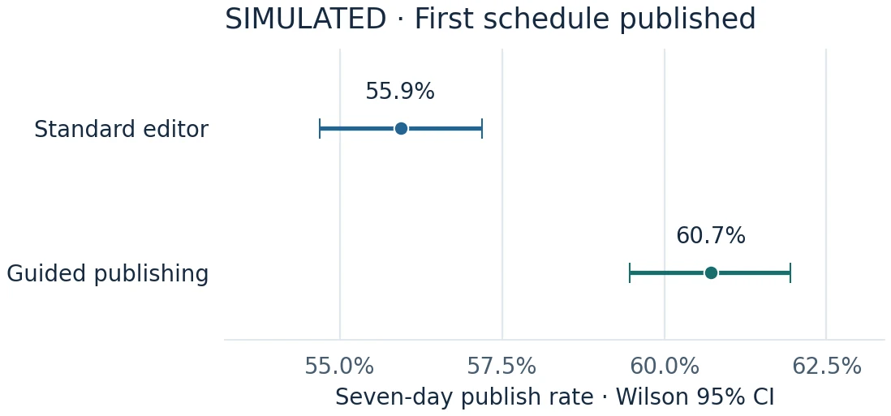
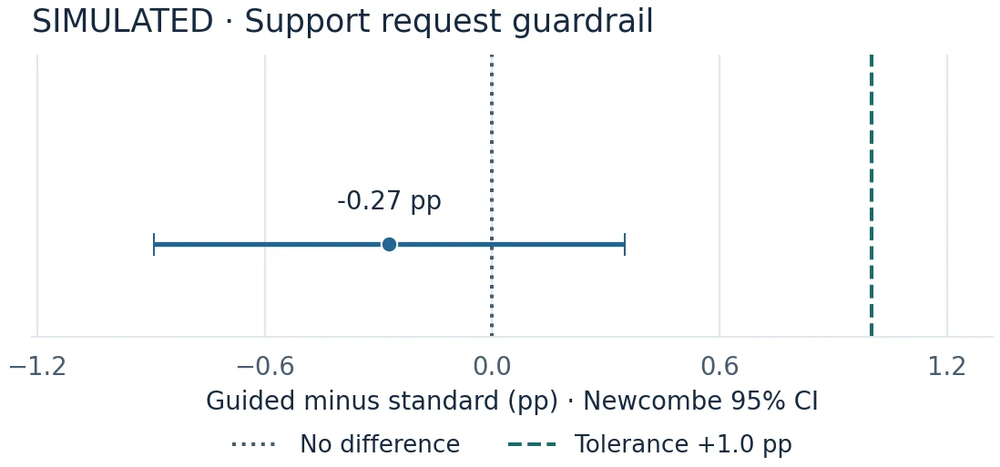

01. The product question
Publishing a first schedule is an early milestone for a workspace setting up shift scheduling. This exercise compares a standard editor with a guided publishing flow that walks a manager through the steps to publish.
The primary outcome is whether a workspace publishes a first schedule within seven days of assignment. The guardrail is whether a workspace makes any support request during the same window. The illustrative decision criteria require at least a two percentage-point increase in publishing and allow up to a one percentage-point increase in support requests.
02. Simulation and assignment
The generator creates 12,000 fictitious workspaces with complete seven-day outcomes. Each workspace is independently assigned to the standard or guided flow with equal probability. Randomization happens at the workspace level so that managers sharing one schedule would receive the same flow in a live trial.
- Assigned workspaces
- 12,000
- Standard editor
- 6,028
- Guided publishing
- 5,972
The expected count is 6,000 per arm. A Pearson chi-squared check for a sample ratio mismatch gives χ² = 0.261 and p = 0.609 with one degree of freedom. The p-value is above the 0.01 flagging threshold.
The seed is 42. The generator sets publishing probabilities to 55% for the standard editor and 60% for guided publishing. It sets support-request probabilities to 3.0% and 3.2%, respectively. These rates are inputs to the simulation.
03. Analysis workflow
- Generate workspaces
- Audit assignment
- Measure outcomes
- Estimate uncertainty
- Check both thresholds
Keep the assigned denominators
Intent-to-treat measures each outcome in the workspace’s assigned arm. Workspaces without a publish event or support request still count in the denominator. A workspace can contribute to both outcomes.
Estimate the guided-minus-standard difference
Report Wilson 95% confidence intervals for arm rates and a Newcombe 95% interval for each absolute difference. Compare the publishing interval’s lower bound with the +2 percentage-point minimum and the support interval’s upper bound with the +1 percentage-point tolerance.
04. Simulated results
The seed-42 run estimated a 4.78 percentage-point increase in first publish (95% CI 3.01 to 6.54 pp). The support-request difference was −0.27 percentage points (95% CI −0.89 to 0.35 pp).
| Outcome | Arm | Events | Rate | Wilson 95% CI |
|---|---|---|---|---|
| First publish | Standard | 3,372 | 55.94% | 54.68% to 57.19% |
| First publish | Guided | 3,626 | 60.72% | 59.47% to 61.95% |
| Support request | Standard | 194 | 3.22% | 2.80% to 3.69% |
| Support request | Guided | 176 | 2.95% | 2.55% to 3.41% |
The publishing difference is 8.54% relative to the standard editor rate. The two-sided test of equal publishing rates gives z = 5.308 and p = 1.11e-07.


The publishing interval clears the +2 percentage-point minimum, and the support interval stays below the +1 percentage-point tolerance. The generator’s +0.20 percentage-point support difference lies within the simulated interval.
05. Interpretation and limits
The simulation shows how the decision rule behaves when the assignment process and outcome probabilities are known. The observed rates vary around the inputs through simulated sampling. These results describe the exercise and cannot estimate the impact of a real product change.
A live test would need an eligibility rule, separate assignment and exposure logs, a full seven-day window for each workspace, and a sample-size calculation based on product traffic. Audit event completeness before treating an absent event as a zero.
Workspace assignment reduces contamination between managers sharing a schedule. A live design should also consider interactions across locations, spillovers from shared support staff, and how novelty could affect the outcome.
06. Reproduce the study
Run the seeded generator locally to recreate the synthetic trial and export aggregate statistics and charts. The project includes its assumptions, dependency versions, and tests.
cd projects/scheduling-ab-test
python -m pip install -r requirements.txt
python -m src.run
python -m unittest discover -s tests